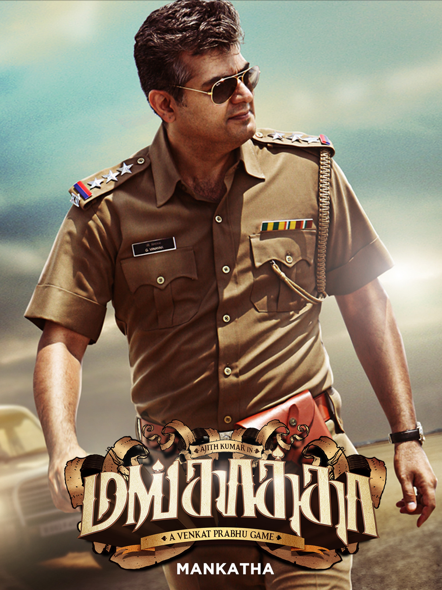
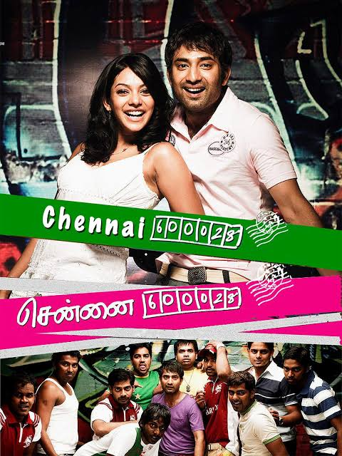
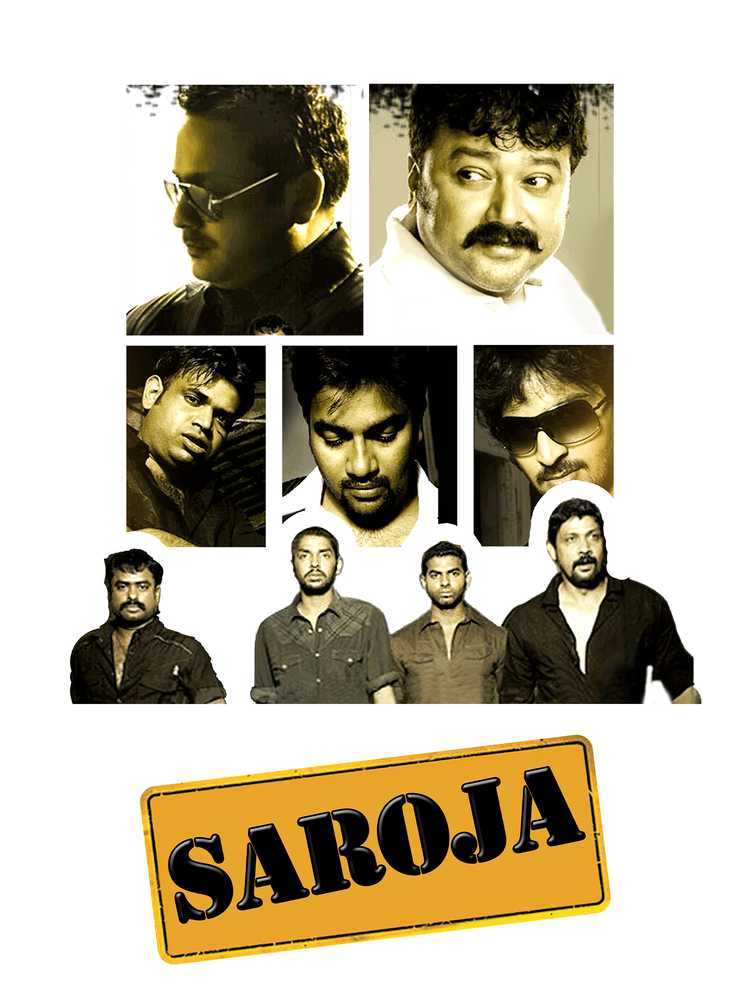

|
| Venkat Prabhu, is the son of director and music director Gangai Amaran. Venkat Prabhu started his career as a singer in the film industry and later became an actor, acting in character roles rather than in the lead. He hogged the spotlight for the first time when he turned director with the summer hit Chennai 600028, after which he directed the comedy thriller film Saroja. This proved to be a successful box-office hit |
|  |  |  |